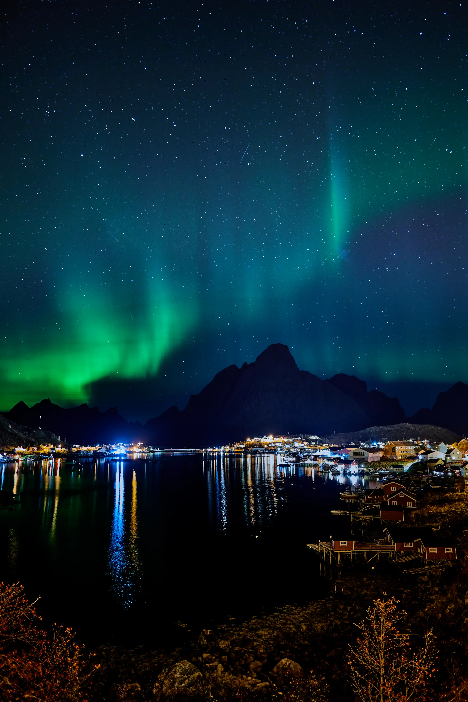

Archivo Visual 2016–2026
Una década capturando la esencia de lo efímero.
Independencia
Sin escalas forzadas. Sin itinerarios impuestos.
Estrategia
El Estudio Perfecto
Priorizar la autonomía del alojamiento privado para el control total.
Nueva Zelanda: El Cambio
Eficiencia Cuántica
El salto técnico: del ruido del Micro 4/3 a la pureza del Full Frame tras una comparativa verídica en el hemisferio sur.
[ SENSOR_UPGRADE: 20MP > 42.4MP ]

Presupuesto Inteligente
Máximo confort con un objetivo de 50€/noche. Gestión del valor.
Finanzas en Ruta
Gestión de activos y libertad financiera en movimiento.
Visión Original
Lejos de las multitudes, cerca de la autenticidad.